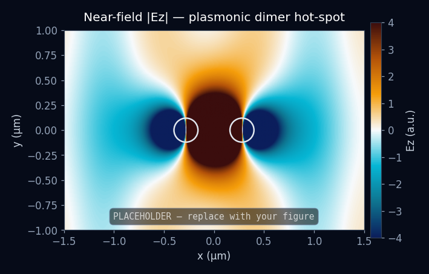

Nanoparticle dimer hot-spots
Near-field distribution for a coupled pair of metal nanospheres. As the gap narrows the modes hybridise and field intensity in the junction rises steeply — the effect that underpins SERS.
- Solver
- Meep — 3-D FDTD
- Sweep
- Gap 5–60 nm, diameter 40–140 nm
- Output
- |E/E₀| map, enhancement factor
MeepLSPR